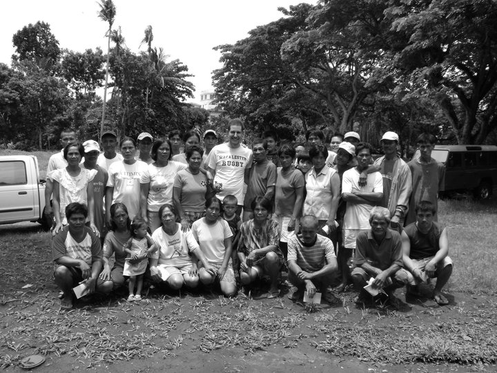

Eitan Says Goodbye
Originally written August 2010

Yesterday, I decided to host a farewell lunch for the people I’ve been working with in the fields. I did this primarily because I had seen how hard-pressed and spent they always seemed to be, and how much I wanted them to genuinely enjoy a massive meal without having to immediately rush right back out to labor under the sun. We headed to the local supermarket to stockpile all the supplies, navigating the trip even while being loudly scolded by the farm owner's wife over our logistics. At one point, I flat-out had to tell her to "chill out." We didn't buy anything hyper-luxurious, choosing instead to settle for heavy sandwiches loaded with sweet Filipino spreads, cookies, frozen ice pops, and a massive tray of pasta tossed with sausages and processed cheese.
I woke up on Saturday around 7:00 AM to get all the food prepared so it would be ready to serve by 10:00 AM. We began assembling the sandwiches, boiling the water for the pasta, and tackling a dozen minor kitchen tasks to get the feast packed. Around 9:00 AM, I drove out to where the workers live to remind them of the farewell gathering. To my surprise, I found that none of them had actually gone out to the sugarcane sectors to work that morning; they were all waiting inside their respective hamlets, so I had to navigate the communities to round everyone up. Originally, I had pictured a dramatic movie scene—marching out into the dense furrows to rescue my sweaty, exhausted coworkers from their labor and escort them to our meeting place. Instead, I just told the early risers to spread the word, and by 10:00 AM, the crowd began trickling in, many bringing their young sons and daughters along for the food.
We unloaded the trays along with twenty liters of soft drinks. The moment I started unlatching the tailgate of the truck, the food vanished into thin air. Three kilograms of pasta, three kilograms of sauce, two kilograms of sausage, five kilograms of local bread, four kilograms of sandwich spread, and an entire bucket of cookies were completely decimated in less than fifteen minutes. Roughly twenty-five people attended, and for a panicked minute during the rush, I genuinely worried we wouldn't have enough to go around. Of course, not all of the food was actually consumed on the premises; I caught several workers systematically stashing full sandwiches and bottles of soda deep into the surrounding bushes so they could carry them home to enjoy with their families later. It was a mad, competitive dash to the table, but I was deeply glad to see that almost everyone walked away with a fair share.
After lunch settled, I cleared my throat to deliver a small speech—to offer a sincere thank-you for letting me labor alongside them in the furrows, for welcoming me as a true member of the family, and for showing me the exact boundaries of what my body could accomplish while opening my eyes to their structural hardships. I thanked them thoroughly from the bottom of my heart, and I’m sad to admit that the gravity of the moment made a few of the older workers cry.
As a final surprise, I revealed a stack of photo prints I had processed in town—pictures I had quietly been snapping of them since the very first day of my farming endeavors. I had made sure to print at least one distinct portrait for every single person on the crew. We were gathered inside the open-air plantation chapel, so I laid all the glossies out across the wooden benches, instructing everyone to walk around and view the entire exhibition before claiming their own. They were completely amazed at how exceptional they looked on paper, and seeing their faces light up with immediate smiles was incredibly fulfilling. I told them they were free to trade them, mail them to relatives, or keep them forever. They were deeply happy.
Once the prints were distributed, I wanted to capture one final memory, so we all grouped together for a massive collective photograph. A few of the women were still visibly weeping, and I felt tears stinging my own eyes as the crowd surged forward to give me a farewell kiss on the cheek and wish me a safe journey back home. Because of the massive height difference, many of them couldn't quite reach my face, delivering awkward, emotional kisses directly onto my neck instead—but I could deeply feel the absolute warmth of their wishes regardless of how clumsy the mechanics were. I threw my arms around everyone, and even the gruff field men stepped up to press their faces to mine in a farewell embrace. It was a bit intense, but I stood there smiling through it all. I said my final goodbyes, and we all dispersed back to our quarters—everyone completely happy and well-fed, if a little bit heavy-hearted.
Later that afternoon, after the dust from the event had fully settled, I took a book outside to unwind. Laying flat on the grass right beside the swimming pool, I held the pages up against the glare of the sun. I read peacefully for about half an hour until my eyes caught an entirely bizarre atmospheric phenomenon. High above the book, completely encircling the sun, hung a colossal, perfectly delineated rainbow in the distinct shape of a luminous ring. I had never witnessed a complete, 360-degree circular halo like that in my entire life. I stared up at the sky, absolutely transfixed by how strikingly pretty and awesome it looked floating in the atmosphere.
I watched the ring for a solid ten minutes before returning to my room, my mind looping over the mechanics of the halo. When I went inside for dinner, I eagerly described what I had witnessed to the hacienda owner, still riding the high of seeing a complete circular rainbow. He listened, looked at me, and asked where exactly I thought rainbows came from. I immediately launched into a technical explanation, explaining that it was a precise refraction of light—that the ambient humidity and moisture suspended in the air functioned as a giant prism, splitting the white sunlight into its distinct visible spectrum. He burst out laughing, shaking his head and noting how incredibly nerdy I sounded in that moment.
He then looked at me seriously and explained that, from his perspective, a rainbow was God's deliberate way of reminding humanity of His permanent presence—a sacred covenant indicating that after the devastation of the Great Flood, He would never punish mankind that way again. I felt myself blush intensely, completely caught off guard by the sudden weight of his words. Standing there with my own religious beliefs still entirely unmapped and undefined, I looked away and thought to myself: *Well, how very curious.*